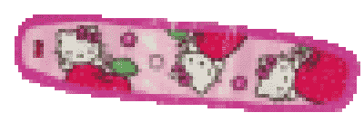

Hildy looks you up and down.

>I don't think you'll be permanently disfigured.
I have just the things to fix you up.
Hildy rifles around in a box in the corner,
then trots back over to you and drops something out of her mouth and into your hand.

>Here, stick this on your face,
you'll feel better.
I'll be right back.
Hildy runs across the room and disappears into one of the tunnels by the floor.
You can hear some muffled crashing and clanging.
What's she doing in there?
Before you have time to ask Hildy is back,
balancing a tray she puts down in front of you.
>Bon appetit!
This is my super secret soup that heals all ills.
Try it, you'll like it!
You sip the soup and feel immediately restored.
Now that you're all warm and fuzzy inside,
Hildy's pile of blankets in the corner is looking pretty inviting.
Maybe Hildy and you can cuddle up and nap a while.